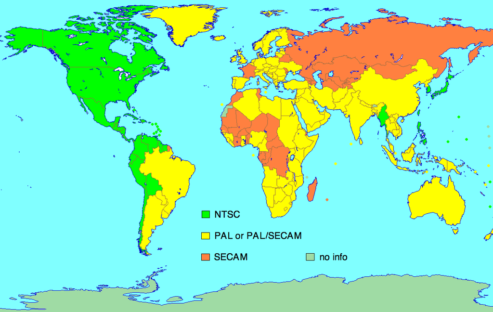

|
I video sono immagini in successione riprodotte ad una velocità sufficiente da fornire l'illusione del movimento. Il nostro occhio guarda la realtà con una frequenza di circa 30 immagini al secondo. Quindi un video fluido deve essere composto da almeno 30 immagini al secondo, altrimenti sarà a scatti. Il frame rate è la frequenza dei fotogrammi, misurata in Hz o fps (frame per secondo). Dato che noi percepiamo la realtà a 30 fps un filmato con migliaia di fps (esempio di gocce d'acqua che cadono a destra) verrà percepito in slow motion (utile per analizzare eventi molto rapidi). |
|
L'animazione sottostante mostra una girandola in rotazione e la durata di questa animazione è di 3 secondi.
Il frame rate di questa animazione è controllabile tramite lo slider a destra mostrando anche il numero di
fps. Con un fps la girandola farà 3 rotazioni da 120°, quindi 3 fotogrammi ogni 3 secondi (1 fps), con 2 fps
la rotazione sarà di 60° alla volta. (6 fotogrammi in 3 secondi ovvero 2 fps) Aumentando questo numero il
suo moto rotatorio sarà sempre più fluido e fedele alla realtà. Si può notare come dopo 60 fps la differenza
di qualità diminuisca. |
|
|
|
|
|
|
Ci sono 3 sistemi principali di trasmissione dei video: NTSC, PAL e SECAM. Ognuno di questi sistemi utilizza una frequenza diversa di fotogrammi e ha differenti caratteristiche geografiche di utilizzo. Il sistema NTSC è utilizzato principalmente negli Stati Uniti e in America del Nord, e utilizza un frame rate di 30 fotogrammi al secondo. Il sistema PAL, utilizzato principalmente in Europa, utilizza un frame rate di 50 fotogrammi al secondo e incorpora anche un sistema di interlacciamento per migliorare la qualità dell'immagine. Infine, il sistema SECAM è utilizzato principalmente in Francia e alcuni paesi dell'Europa orientale e utilizza un frame rate di 25 fotogrammi al secondo. Ognuno di questi sistemi ha i propri vantaggi e svantaggi, come una maggiore compatibilità o una migliore qualità dell'immagine, ma tutti sono stati progettati per offrire un'esperienza visiva di qualità per gli spettatori. Inoltre, con l'avvento della tecnologia digitale, sono stati introdotti nuovi frame rate come 50p, 60p, 120p che permettono maggiore fluidità e realismo nella riproduzione dei video. |
 |
| Frequenza | FPS | Particolarità |
|---|---|---|
| 30p | 30 | per contenuti ad alta definizione |
| 50i | 25 | è il sistema di scansione standard per il sistema di codifica analogico PAL e SECAM |
| 60i | 29,97 | è il sistema di scansione standard per il sistema di codifica analogico NTSC |
| 50p e 60p | 50 e 60 | utilizzate dai sistemi HDTV |
| 120p | 120fps | verrà utilizzato dai sistemi UHD |
|
La compressione dei video è un processo che permette di ridurre la dimensione dei file video senza compromettere troppo la qualità dell'immagine. Ci sono diversi metodi di compressione utilizzati per i video, tra cui:
Ci sono anche altri formati di compressione come H.264, H.265, VP9, e altri ancora, che vengono utilizzati per specifici scopi, come ad esempio la compressione per la trasmissione su internet, la compressione per la registrazione su supporti di memorizzazione, o la compressione per la creazione di DVD e Blu-ray. La scelta del formato di compressione dipende dalle esigenze specifiche del progetto e dalla qualità desiderata. |